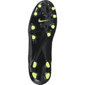
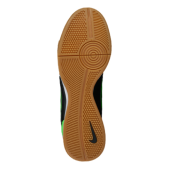
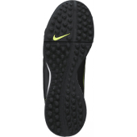

Firm Ground
Firm ground cleats are your “classic” soccer shoes made for outdoor play on firm, natural grass surfaces. This is the most common type of soccer cleat.
Indoor
Indoor soccer shoes have flat bottoms, often a gum rubber material, designed for indoor and futsal play in a gym or on a hard court surface.
Turf
Turf soccer shoes have durable bottoms covered in lots of small, nub like cleats for ultimate grip on artificial turf.
